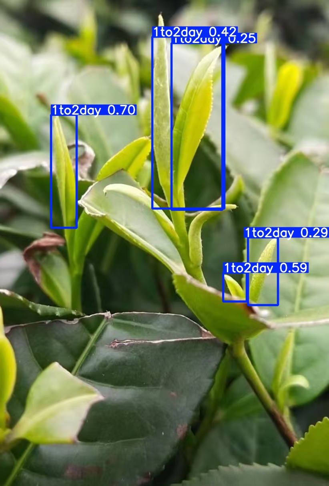
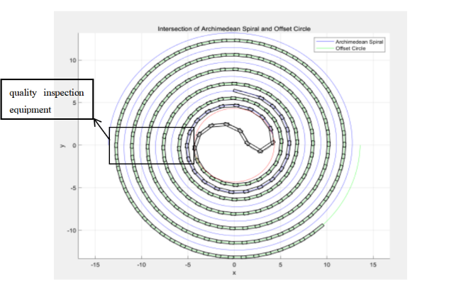
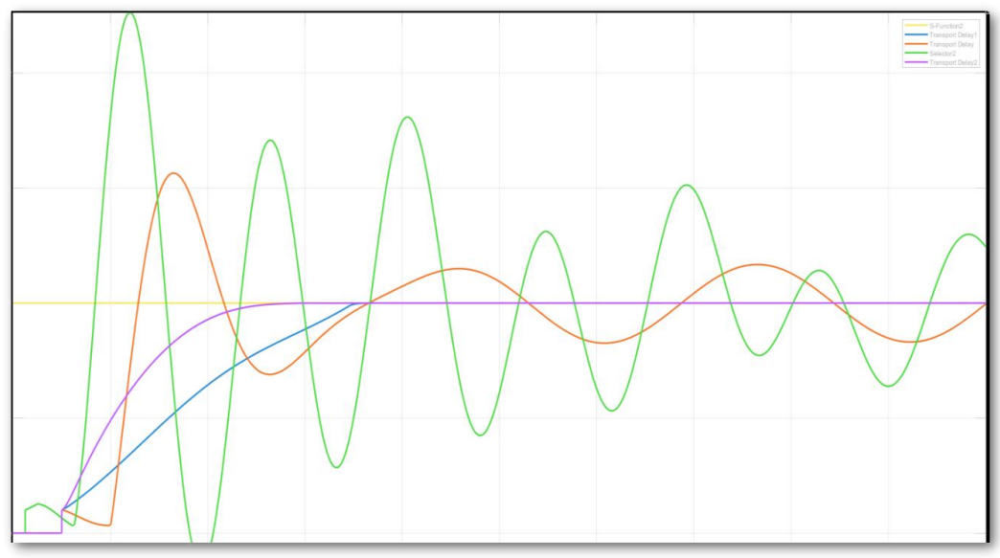
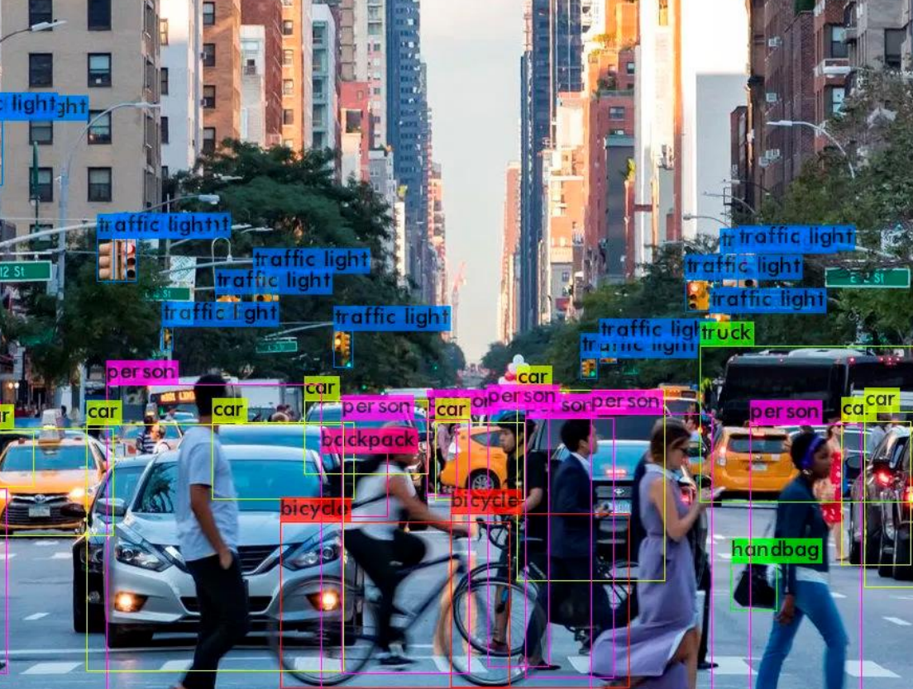
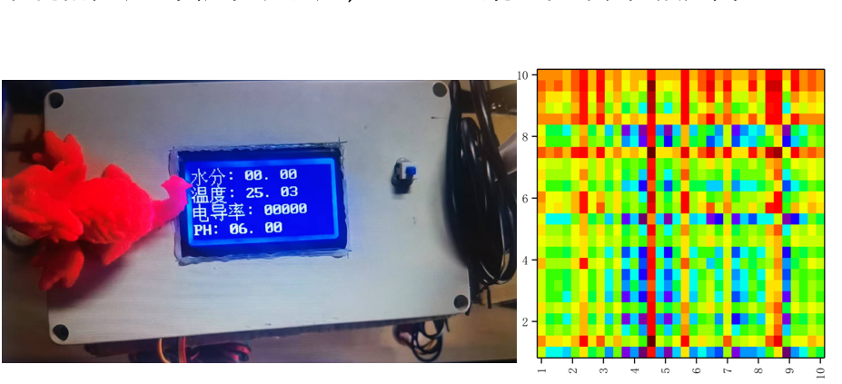
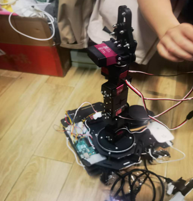
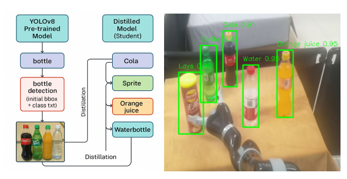
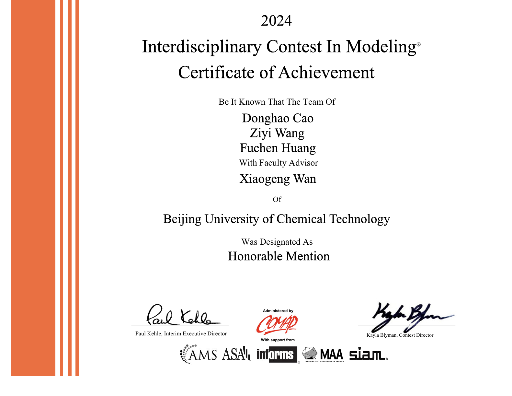
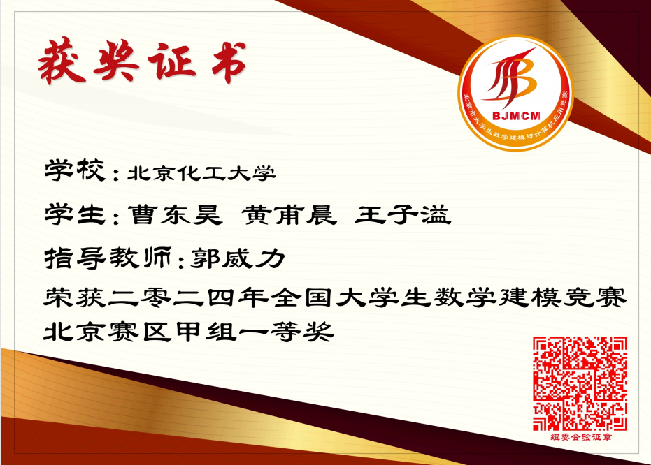

Donghao Cao
I'm a student majored in Mechanical Engineering at BUCT (Beijing University of Chemical Technology) in Beijing, China, and I joined a 3 weeks intership at Luohuagroup.
In learning courses, I got 90.43 of 100 averaging-score. Apart from that, I took part in many projects, and cooperated with a lot of tutors and friends.
I'm interested in computer vision, control engineering, robotics, and mathematics modelling.

To address the challenges of missed detection and misdetection in tea bud recognition tasks under complex environments, this paper proposes YOLOv8-SIEMF, a novel detection model integrating Sub-models Integral Evaluation (SIE) and Multi-objective Filtering (MF). First, we design a hierarchical detection framework where different sub-models process diverse resolution levels of input images to extract complementary features. An evaluation mechanism is developed to comprehensively fuse the outputs of sub-models by considering detection confidence, box overlap, and image sharpness. Meanwhile, a multi-objective filtering module is introduced to enhance the model’s sensitivity to multi-target clusters and improve edge sharpness in grayscale space, which effectively reduces redundant or invalid detection. Experimental results on a self-built dataset demonstrate that the proposed model outperforms mainstream YOLOv8 variants in terms of precision and recall, achieving superior performance in recognizing fine-grained tea buds under real-field conditions

This study presents a uniformly spaced recursive model to determine the position and velocity magnitude of mechanical products at various locations and time intervals. By assuming a constant speed for the assembly line, the position of the initial product at different time intervals is calculated using arc length. Building upon this, a node position model based on the Cosine Rule is applied to recursively determine the front handle center of each subsequent product relative to the rear handle center of the preceding product.
During my college life, I led and joined a lot of projects.

Based on the dSPACE controlled dual-degree-of-freedom platform, the particle swarm optimization algorithm is used to optimize the response of the sine and cosine signals of the sliding mode control, and the dead-time control of the smith controller is optimally improved.

In this project-based course, I gained practical experience in object detection techniques applied to visual data from cameras, including the identification of objects such as people, furniture, and everyday items despite variations in size, shape, and texture. I studied and implemented classical sliding window-based object detectors utilizing hand-crafted features, as well as modern deep learning-based methods employing convolutional neural networks trained on large datasets. The course also covered evaluation metrics to assess and compare model performance on training, validation, and test sets. Through hands-on exercises and critical analysis, I developed strong problem-solving skills and the ability to independently explore advanced topics in computer vision.

As part of an on-campus science and technology competition, I led a team to develop a remotely controlled vehicle equipped with a sensor rod for measuring physical and chemical properties of soil. The project integrated electronic information technology with mechanical design and control. My primary responsibilities included the implementation of remote control functionality, the mechanical design and fabrication of the sensor rod, and the development of its downward extension mechanism. The project earned 6th place in the highest-level track of the competition at the university level.

This project fully leverages the YOLOv8 deep learning algorithm and sensor technologies to reduce the production cost of tea-picking machines while enabling selective harvesting of tea buds. The system is capable of autonomously performing picking tasks by intelligently distinguishing between tender and mature leaves. A specialized selective picking manipulator ensures precise, swift, and stable harvesting of tea buds, effectively minimizing bud damage. Ultimately, the system aims to facilitate the mechanized harvesting of high-grade teas and enhance the quality of mechanized picking for premium tea varieties.
I've got amounts of prizes in the field of machinacial, robotics, maths modeling and coding.

In this competition, the robot was required to perform a series of domestic tasks such as "Carry My Luggage" and "Receptionist," which tested its capabilities in mapping, navigation, robotic arm control, and computer vision. I served as the leader of the vision team and made key contributions by applying model distillation to the YOLOv8 algorithm. This significantly reduced the need for time-consuming manual annotation and enabled the team to obtain robust, background-invariant models. I also collaborated closely with other team members to ensure successful completion of the competition tasks.

With the increasing frequency of natural disasters, the losses caused by natural disasters and insurance industry continue to increase, the real estate industry is faced with the problem of construction location, and some important buildings are also damaged by natural disasters. We establishes Insurance Provision Model (IPM), Protection Index (PI), Architecture Construction Value (ACV) and other models, and solves them based on prediction model, break-even analysis, combined weight analysis, TOPSIS, ArcGIS location analysis and other methods.

The Bench Dragon is an important folk activity in China's coastal regions, where the procession moves along equidistant spirals. Issues such as collisions between different parts and disorderly formations may arise if the pitch of the spiral is too large or too small, or if the speed is inappropriate. By using mathematical modeling to optimize the position and speed parameters of the dragon procession, the overall coordination of the team can be improved and collisions can be avoided.
Here's a lot of small awards and I like some other subjects such as physics and English competitions.
I joined this activity in July, 2024
The module calls STEM Module: Frontier Sciences (Mathematics, Physics, Computer Science, Engineering)
I got grade A+ (very top student) in this program (click to certificate)
We also have made a funny and scary film.
That is... He is coming!!
-----Directed by Donghao Cao-----
As the head of the lecturer group, arrange tutoring sessions with peer lecturers for those who have difficulty in learning courses.
I had lead a team to go back to my hometown, teaching team how to prepare for College Entrance Examination in China.
And we show the college life for high school students. For our outstanding performance, our team got 1st prize finally.
{kind=link}
{kind=link}